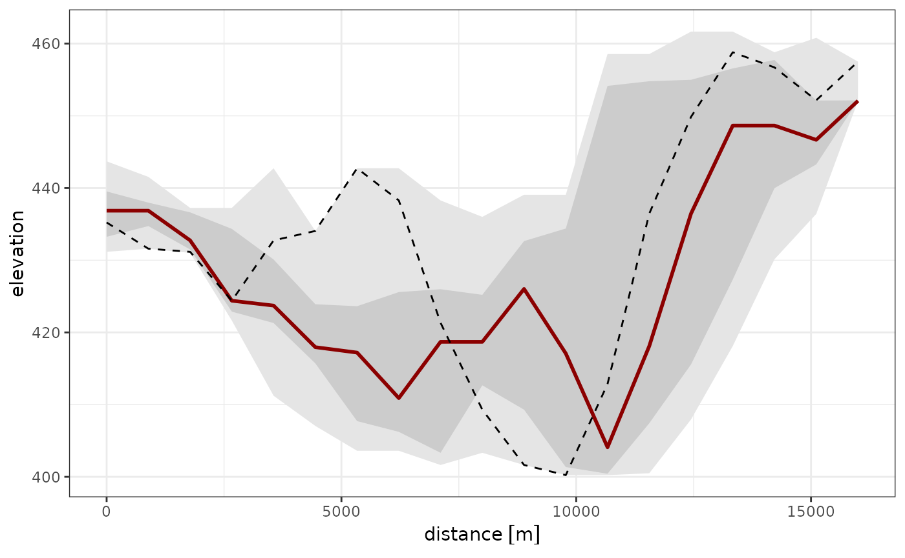

This tutorial demonstrates how to create swath profiles, which are a popular method for examining the topography of an area. These profiles represent generalized elevation profiles of a landscape section.
geoprofiler calculates the elevation profile along a straight line (profile line) and provides statistical parameters (e.g. mean, standard deviation, …) for the elevation in the nearby area.
# Load packages required for this tutorial:
library(geoprofiler)
library(ggplot2)
library(units)
library(sf)
library(terra)
library(tidyterra)
theme_set(theme_bw())
options(ggplot2.continuous.colour = "viridis")
options(ggplot2.continuous.fill = "viridis")Load example data
You can use any spatial data that can be converted into a
SpatRast object. If you have a GeoTiff for example, simply
import it into R using the function
my_raster <- terra::rast("path/to/my/file.tif")For this tutorial we use an example data set that is an snippet of the ETOPO dataset.
data("raster_example")
crs <- "EPSG:26915" # coordinate reference system for projection
my_raster <- terra::rast(raster_example, type = "xyz", crs = "WGS84") |>
terra::project(crs)
elevation_map <- ggplot() +
tidyterra::geom_spatraster(data = my_raster)
elevation_mapDefine a profile
We can define the profile by the direction and distance from one point:
my_profile <- data.frame(lon = -90.75, lat = 48.61) |>
sf::st_as_sf(coords = c("lon", "lat"), crs = "WGS84") |>
profile_points(
profile.azimuth = 135,
profile.length = units::set_units(16, "km"),
crs = sf::st_crs(crs)
) |>
profile_line()
elevation_map +
geom_sf(data = my_profile, lwd = 1)Extract elevation along swath profile
To calculate the elevation along the swath profiles, we need to do two steps:
- Extract the elevation values along an array of straight lines
parallel to our profile line using
swath_profile(). - Calculate some statistics within the swath using
swath_stats().
The function swath_profile() requires the profile line,
the raster file, and amount of equally-spaced, parallel lines on either
side of the profile line (argument k) and the distance
between these lines (dist distance (same units as the
coordinate reference system).
Here, we want to have k=10 lines on both sides of the
profile, spaced by dist=300 meters:
swath <- swath_profile(my_profile, raster = my_raster, k = 5, dist = 1000)The output is a list that contains the extracted elevation data and also the generated swath lines:
elevation_map +
geom_sf(data = swath$lines, lwd = .1)> Note that the width of the swath profile is . In our example, the width is 10.000 (m).
Next, we calculate some summary statistics of the elevation across
the swath, such as min/max, mean and standard deviation using the
function swath_stats(). We can plug in the length of the
profile by specifying the parameter profile.length by
calculating the length using the function
profile_length().
my_swath_profile <- swath_stats(swath, profile.length = profile_length(my_profile))Plot the swath profile
Finally, we can plot the elevation along the profile and add some of the calculated statistics:
ggplot(my_swath_profile, aes(distance, elevation)) +
geom_ribbon(aes(ymin = min, ymax = max), fill = "grey90") +
geom_ribbon(aes(ymin = quantile25, ymax = quantile75), fill = "grey80") +
# geom_ribbon(aes(ymin = mean - sd, ymax = mean + sd), fill = "grey60") +
geom_line(aes(y = median), color = "darkred", lwd = 1) +
# geom_line(aes(y = mean), color = "dodgerblue", lwd = 1) +
geom_line(lty = 2)